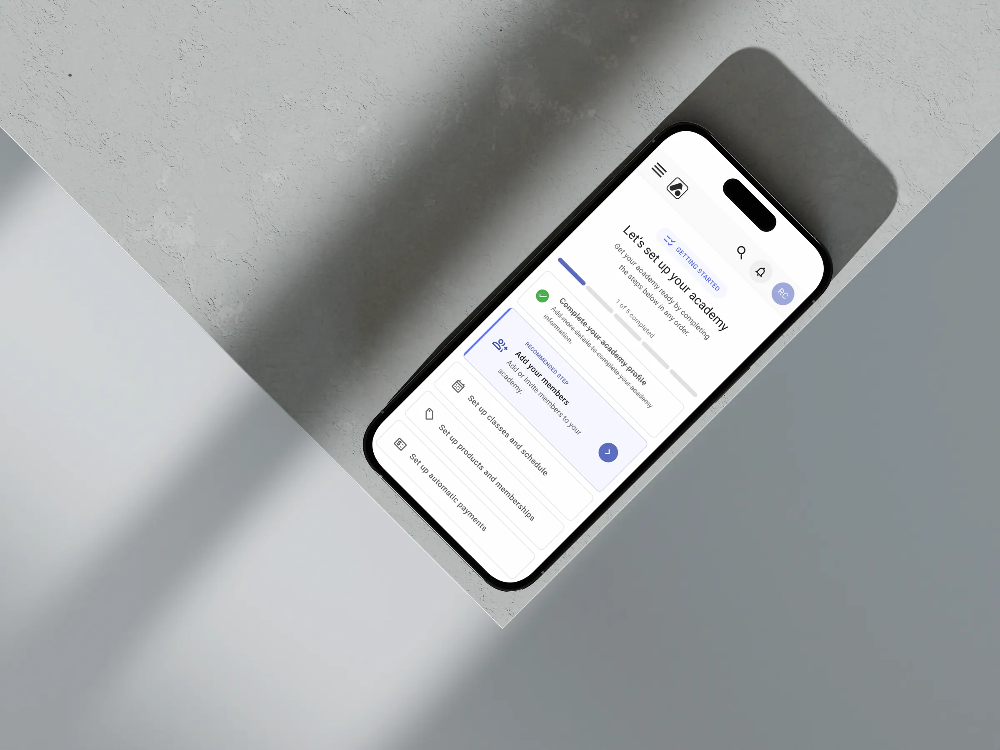

Clarity in complexity.
Designing digital products across complex domains, where clarity, usability and thoughtful execution genuinely matter.
BJJLINK
Making every workflow a winning move.
Reimagining a complex SaaS platform for martial arts academies, simplifying everyday operations through a more intuitive product experience.

Snap Kitchen
The perfect recipe for better experiences.
Reimagining the entire meal service ecosystem, from customer ordering to back-office operations, creating a more connected experience across every touchpoint.

O Boticário
Skincare, but for digital experiences.
Designing intuitive campaign experiences for one of Latin America's leading beauty brands, improving usability, strengthening engagement and driving conversion.

I'm Nathalia, a Product Designer partnering with product teams to turn complex problems into thoughtful, well-crafted digital products.
I specialise in designing digital products across complex domains, where business goals, technology, and human behaviour intersect, and where clarity, usability, and thoughtful execution genuinely matter.
I'm often brought in at the start, helping teams take products from 0 → 1, and just as often to redesign and evolve existing products that have grown in complexity or no longer meet user and business needs.
My approach is collaborative and research-driven. I work closely with product managers, engineers, and stakeholders to shape ideas, validate assumptions, and design products that are intuitive, scalable, and built to evolve. No unnecessary complexity, just thoughtful design grounded in research, strategy, and close collaboration.
Expertise
Research
- UX Research
- User Interviews
- Usability Testing
- Behavioural Analytics
- Discovery & Insight Generation
- Journey Mapping
Design
- Product Strategy
- Interaction Design
- Information Architecture
- Wireframing & Prototyping
- Design Systems
- Accessibility (WCAG)
Delivery
- Cross-functional Collaboration
- Stakeholder Alignment
- Developer Handoff
- Design QA
- AI-Enhanced Workflows
- Continuous Optimisation